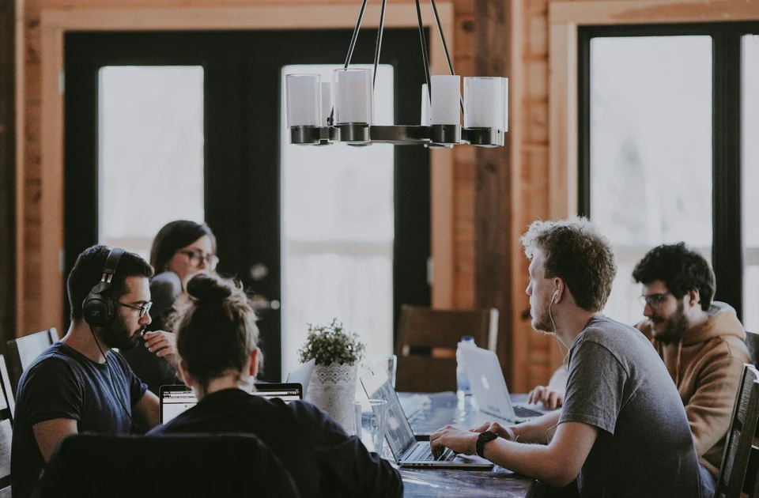

collaboration · primary
Ideas around the table
4000 × 2625 px · photograph
A complementary angle to QckxruozjRg. Choose one lead image per page.
Annie Spratt / Unsplash

Paths and placement
Organisations; About
assets/stock/masters/collaboration/ideas-around-the-table--hCb3lIB8L8E.jpgUncropped maximum at 2× density: 2000 CSS pixels.
Alt text: Adults exchange ideas around a wooden table with laptops.